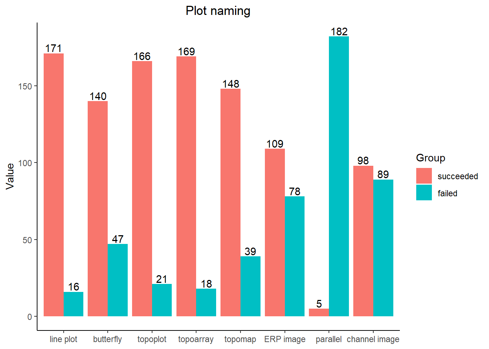

# upload to the git
library(readxl)
library(foreach)
library(stringr)
library(dplyr)
library(tokenizers)
library(data.table)
library(ggplot2)
library(plyr)
library(quanteda)
library(SemNetCleaner)
library(purrr)
library(tidytext)
library(tm)
library(topicmodels)
library(SnowballC)
library(Matrix)
library(text2vec)
library(tidyr)
library(kableExtra)
library(stringi)3.plot_breakdown
Setup
data <- read_excel("data/results-survey3.xlsx")
data <- data[1:121] %>%
filter(.[[18]] !='Yes') # not analysed any EEG method
vec <- names(data[ , grepl( "How would you " , names(data))]) %>% str_split_i(., "\\.....", 2) %>% as.numeric()
vec[1] 69 80 85 90 97 102 107 112word_preproc <- function(data, N){
#N = 69
tmp <- data %>% filter(!is.na(.[[N]])) %>% select(., N) %>% dplyr::rename(words = !!names(.)[1]) %>% mutate(words = tolower(words)) %>%
#mutate(words = gsub(" \\(or.*", "", words)) %>% mutate(words = gsub(", or.*", "", words)) %>%
mutate(words = stri_replace_all_regex(words,
pattern=c(" \\(.*", ", or.*", " across", " with", " at", " by", " over", " of", " per", "at", " across", " accross"),
replacement=c(''),
vectorize=FALSE))
t <- foreach(i = 1:nrow(tmp)) %do% tokenize_words(tmp$words)
stop_list = c("a", "an", "the", "wise", "like", "s")
t2 <- foreach(i = 1:length(t)) %do% t[[1]][[i]][!(t[[1]][[i]] %in% stop_list)]
#t21 <- foreach(i = 1:length(t2)) %do% map(t2[i][[1]], singularize)
t3 <- foreach(i = 1:length(t2)) %do% paste(sort(unlist(t2[i])), collapse = ' ')
t4 <- data.frame(matrix(t3)) %>% dplyr::rename(words = !!names(.)[1])
return(t4)
}Plot naming
Those who named a plot somehow and those who failed to do that
na_table <- function(data, vec){
temp <- data.frame(1:10)
for (i in vec){
temp1 <- word_preproc(data, i) %>%
mutate(words = ifelse(str_detect(words, 'idea|sure|confus|aware|do not|why'), "NA", as.character(words))) %>%
mutate(words = ifelse(nchar(words)==0, NA, words)) %>%
table(.) %>%
data.frame(.) %>% filter(words != "NA") %>%
summarise(n = sum(Freq))
temp <- cbind(temp, temp1)
}
temp <- temp[2:length(temp)]
colnames(temp) <- c("line plot","butterfly","topoplot","topoarray","topomap","ERP image","parallel", "channel image")
return(temp)
}
num_named <- na_table(data, vec)Warning: Using an external vector in selections was deprecated in tidyselect 1.1.0.
ℹ Please use `all_of()` or `any_of()` instead.
# Was:
data %>% select(N)
# Now:
data %>% select(all_of(N))
See <https://tidyselect.r-lib.org/reference/faq-external-vector.html>.slice(num_named, 1) %>%
gather(., plots, succeeded, `line plot`:`channel image`, factor_key=TRUE) %>%
mutate(failed = nrow(data) - succeeded) %>%
gather(., res, score, succeeded:failed, factor_key=TRUE) %>%
ggplot(., aes(x = plots, y = score, fill = res)) +
geom_bar(position = "dodge", stat = "identity") +
labs(x = "Category", y = "Value", fill = "Group") +
theme_classic()
Top 10 plot names
# does it work?????
freq_table <- function(data, vec){
temp <- data.frame(1:10)
for (i in vec){
# i = 112
temp1 <- word_preproc(data, i) %>%
mutate(words = ifelse(str_detect(words, 'idea|sure|confus|aware|do not|know|why|remember'), "NA", as.character(words)),
words = ifelse(nchar(words)==0, NA, words),
words = ifelse(str_detect(words, 'erps|ep|erp plot|event related potential'), "erp_plot", as.character(words)),
words = ifelse(str_detect(words, 'terfly|butte'), "butterfly_plot", as.character(words)),
words = str_replace(words, 'responses', "response"),
words = gsub('channels|chanel', 'channel', words) ,
words = ifelse(str_detect(words, '.*grand average.*'), "grand_average_erp_plot", as.character(words)),
words = ifelse(str_detect(words, 'classic'), "classic_erp_plot", as.character(words)),
words = gsub('mean|averaged', 'average', words),
words = gsub('course time', 'timecourse', words),
words = gsub('.*timecourse.*', 'time_course_plot', words),
words = gsub('.*erp waveform.*', 'erp_waveform', words),
words = gsub('average condition.*', 'average_condition_erp', words),
words = gsub('electrode', 'channel', words),
words = ifelse(str_detect(words, 'terfly|butte'), "butterfly_plot", as.character(words)),
words = ifelse(str_detect(words, 'spaghetti'), "spaghetti_plot", as.character(words)),
words = ifelse(str_detect(words, 'all channels'), "all_channels_erp", as.character(words)),
words = ifelse(str_detect(words, 'single channel erp|single erp|erp of single channels'), "single_channel_erp", as.character(words)),
words = ifelse(str_detect(words, '.*channel erp.*'), "channel_erp", as.character(words)),
words = ifelse(str_detect(words, 'amplitude'), "amplitude", as.character(words)),
words = gsub('x |multi |muti |multeple ', 'multiple ', words),
words = gsub('several|each|multeple', 'multiple', words),
words = gsub('erpimage', 'erp image', words),
words = gsub('heat map', 'heatmap', words),
words = gsub('topomaps', 'topomap', words),
words = gsub('topoplots', 'topoplot', words),
words = gsub('epochs', 'epoch', words),
words = gsub('trials', 'trial', words),
words = gsub('topographical', 'topographic', words)
) %>%
table(.) %>%
data.frame(.) %>% mutate(n = lengths(gregexpr("\\W+", words)) + 1) %>%
filter(n < 10) %>% dplyr::select(-n) %>% filter(words != "") %>%
arrange(desc(Freq)) %>% head(10) %>%
unite(word_freq, c("words", "Freq")) %>% filter(!grepl("NA", word_freq))
if (length(temp1) < 10){
na_frame <- as.data.frame(matrix(NA, nrow = 10, ncol = 1))
names(na_frame) <- names(temp1)
temp1 <- rbind(temp1, na_frame) %>% head(10)
}
temp <- cbind(temp, temp1)
}
temp <- temp[2:length(temp)]
colnames(temp) <- c("line plot","butterfly plot","topoplot","topoplot array","topographic map","ERP image","parallel plot","channel image")
return(temp)
}
top10 <- freq_table(data, vec)
top10 %>%
kbl() %>%
kable_styling()| line plot | butterfly plot | topoplot | topoplot array | topographic map | ERP image | parallel plot | channel image |
|---|---|---|---|---|---|---|---|
| erp_19 | butterfly plot_45 | topoplot_38 | topoplot_6 | multiplot_10 | erp image_13 | amplitude channel peak_1 | erp image_3 |
| erp plot_18 | butterfly_9 | topography_14 | series topoplot_4 | distribution erp scalp_3 | erpimage_7 | amplitude electrode erp selective_1 | hemap_2 |
| average erp grand_4 | all channels erp_2 | scalp topography_10 | time topoplot_4 | erp topo_3 | erp single sorted trial_2 | amplitude electrode plot_1 | 2d channel image plot time_1 |
| average erp plot_3 | butterfly erp plot_2 | topomap_8 | time topo_3 | channel multi plot_2 | frequency plot time_2 | amplitudes and channels conditions eeg for selected single trial_1 | all averages channels in plot same_1 |
| erp waveform_3 | channel erp multi plot_2 | plot topographic_7 | time topography_3 | channel plot_2 | plot raster_2 | NA | all channel channels or plot time_1 |
| average grand_2 | mess_2 | map scalp_5 | time topoplots_3 | erp_2 | plot werfall_2 | NA | all channel erp plot_1 |
| erp series time_2 | all amplitude for in post pre stimulus time voltage_1 | map topographic_5 | course time topography_2 | erp map scalp_2 | across erp plot trials_1 | NA | all channels response_1 |
| erp wave_2 | all average electrodes erps grand_1 | topo_4 | dynamic topographies_2 | erp multiplot_2 | activity change trials_1 | NA | amplitude as average channel eeg function single time_1 |
| erps_2 | all change channels dynamics on recoded time_1 | map topographical_3 | erp topoplot_2 | erp topography_2 | aligned response trials_1 | NA | amplitude channel erp spectral_1 |
| NA | NA | plot topo_3 | map scalp_2 | NA | NA | NA | NA |
# cut after prepositions
# remove those with 1 voice
#is sorting is really needed? For each case separately
1
# or - slipt and take first one
word_preproc(data, 69) %>%
mutate(words = ifelse(str_detect(words, 'sure|confus|aware|do not'), "NA", as.character(words))) %>%
mutate(words = ifelse(str_detect(words, '.*grand average.*'), "grand_average_erp_plot", as.character(words))) %>%
mutate(words = ifelse(str_detect(words, 'average erp|averaged erp'), "average_erp_plot", as.character(words))) %>%
mutate(words = ifelse(str_detect(words, 'erps|ep|erp plot|event related potential'), "erp_plot", as.character(words))) %>%
mutate(words = ifelse(str_detect(words, 'classic'), "classic_erp_plot", as.character(words))) %>%
mutate(words = gsub('responses', 'response', words)) %>%
mutate(words = gsub('mean|averaged', 'average', words)) %>%
mutate(words = gsub('.*time course.*', 'time_course_plot', words)) %>%
mutate(words = gsub('.*erp waveform.*', 'erp_waveform', words)) %>%
mutate(words = gsub('average condition.*', 'average_condition_erp', words)) %>%
table(.) %>%
data.frame(.) %>% filter(words != "NA") %>% #View()
arrange(desc(Freq)) #%>% View() words
1 erp_plot
2 erp
3 average_erp_plot
4 average_condition_erp
5 erp_waveform
6 average grand
7 erp series time
8 erp wave
9 line plot
10 p300
11 plot single
12 2 conditions
13 2 conditions course erp in time
14 2 conditions electrode erp for for x
15 2 conditions erp
16 activity bars error evoked plot shaded single
17 amplitude erp graph
18 amplitude plot plot voltage
19 amplitude signal
20 analysis erp locked time waveform
21 analysis series time
22 and average b conditions da erp
23 and cars faces neural response to
24 and compared conditioned erp in in post potential pre stimulus time two voltage
25 anything but called don't erp ever have i i i in it know particular plot shows think this type
26 area errorbar
27 average
28 average channel erp for one
29 average da sensor series time
30 average different grand series time trial types
31 average erf erp
32 average errors median plot
33 average event grand potential reled
34 average evoked grand one response specific
35 average grand waveforms
36 average group
37 average line plot trial
38 average waveform
39 averages event reled
40 bar erroro shaded
41 bars conditional erp error plot
42 bars error plot timeseries
43 boundedline plot
44 by erp point point sem
45 channel contrast singe
46 channel domain erp single time
47 channel erp single trace
48 channel plot single
49 ci erp
50 comparing conditions evoked plot two
51 comparing erp
52 comparison condition erp error shading
53 comparison erp
54 condition graph voltage
55 conditions erp for timecourse two
56 conditions evoked potential
57 confidence erp intervalslaid
58 course erp time
59 course evoked response time
60 dynamics electrode time x
61 electrode erp interest
62 elicited erp faces houses vs
63 erp error lines trace
64 erp error plot sd type
65 erp error plots sme
66 erp grand average
67 erp graph or plot waveform
68 erp individual variance
69 erp intervals sem waveform
70 erp locked or response stim
71 erp peaks wave
72 erp time voltage
73 erp timeseries
74 erp visualizion
75 error average
76 event potential reled
77 event potentials reled
78 evoked potential
79 evoked potential series time
80 evoked response
81 evoked response series time
82 response temporal
83 series time
84 single
Freq
1 38
2 19
3 17
4 4
5 4
6 2
7 2
8 2
9 2
10 2
11 2
12 1
13 1
14 1
15 1
16 1
17 1
18 1
19 1
20 1
21 1
22 1
23 1
24 1
25 1
26 1
27 1
28 1
29 1
30 1
31 1
32 1
33 1
34 1
35 1
36 1
37 1
38 1
39 1
40 1
41 1
42 1
43 1
44 1
45 1
46 1
47 1
48 1
49 1
50 1
51 1
52 1
53 1
54 1
55 1
56 1
57 1
58 1
59 1
60 1
61 1
62 1
63 1
64 1
65 1
66 1
67 1
68 1
69 1
70 1
71 1
72 1
73 1
74 1
75 1
76 1
77 1
78 1
79 1
80 1
81 1
82 1
83 1
84 12
word_preproc(data, 80) %>%
mutate(words = gsub('electrode', 'channel', words)) %>%
mutate(words = ifelse(str_detect(words, 'terfly|butte'), "butterfly_plot", as.character(words))) %>%
mutate(words = ifelse(str_detect(words, 'spaghetti'), "spaghetti_plot", as.character(words))) %>%
mutate(words = ifelse(str_detect(words, 'sure|confus|aware|do not'), "NA", as.character(words))) %>%
mutate(words = ifelse(str_detect(words, 'all channels'), "all_channels_erp", as.character(words))) %>%
mutate(words = ifelse(str_detect(words, 'multiple channel erp|multi channel erp'), "multiple_channel_erp", as.character(words))) %>%
mutate(words = ifelse(str_detect(words, 'single channel erp|single erp|erp of single channels'), "single_channel_erp", as.character(words))) %>%
mutate(words = ifelse(str_detect(words, '.*channel erp.*'), "channel_erp", as.character(words))) %>%
mutate(words = ifelse(str_detect(words, 'amplitude'), "amplitude", as.character(words))) %>%
mutate(words = gsub('several|each|x |multi |muti |multeple ', 'multiple', words)) %>%
mutate(words = gsub('multeple chanel', 'multiple channel', words)) %>%
mutate(words = gsub('multichannel', 'multiple channel', words)) %>%
mutate(words = gsub('event related potential', 'erp', words)) %>%
mutate(words = gsub('timecourse', 'time course', words)) %>%
mutate(words = gsub('erps|ep', 'erp', words)) %>%
mutate(words = gsub('.*time course.*', 'time_course_plot', words)) %>%
mutate(words = gsub('responses', 'response', words)) %>%
mutate(words = gsub('channels', 'channel', words)) %>%
mutate(words = gsub('averaged', 'average', words)) %>%
mutate(words = ifelse(nchar(words)==0, NA, words)) %>%
table(.) %>%
data.frame(.) %>% filter(words != "NA") %>% #View()
arrange(desc(Freq)) %>% head(10) words
1 butterfly_plot
2 channel_erp
3 all_channel_erp
4 amplitude
5 channel erp multiple
6 mess
7 spaghetti_plot
8 time_course_plot
9 again but channel do erp for have i i it it multiple name not shows th understand
10 all average channel erp grand
Freq
1 66
2 13
3 5
4 3
5 3
6 2
7 2
8 2
9 1
10 13
word_preproc(data, 85) %>% dplyr::rename(words = !!names(.)[1]) %>%
mutate(words = gsub('electrode', 'channel', words)) %>%
mutate(words = gsub('several', 'multiple', words)) %>%
mutate(words = gsub('each', 'multiple', words)) %>%
mutate(words = gsub('multi ', 'multiple ', words)) %>%
mutate(words = gsub('muti ', 'multiple ', words)) %>%
mutate(words = gsub('multeple chanel', 'multiple channel', words)) %>%
mutate(words = gsub('multichannel', 'multiple channel', words)) %>%
mutate(words = gsub('event related potential', 'erp', words)) %>%
mutate(words = gsub('timecourse', 'time course', words)) %>%
mutate(words = gsub('erps|ep', 'erp', words)) %>%
mutate(words = gsub('responses', 'response', words)) %>%
mutate(words = gsub('channels', 'channel', words)) %>%
mutate(words = gsub('averaged', 'average', words)) %>%
mutate(words = gsub('topomaps', 'topomap', words)) %>%
mutate(words = gsub('topoplots', 'topoplot', words)) %>%
mutate(words = ifelse(str_detect(words, 'don|unclear'), "NA", as.character(words))) %>%
mutate(words = ifelse(nchar(words)==0, NA, words)) %>%
table(.) %>%
data.frame(.) %>% filter(words != "NA") %>% #View()
arrange(desc(Freq)) %>% head(10) words Freq
1 topoplot 39
2 topography 14
3 scalp topography 10
4 topomap 8
5 plot topographic 7
6 map scalp 5
7 map topographic 5
8 topo 4
9 map topographical 3
10 plot topo 34
word_preproc(data, 90) %>% dplyr::rename(words = !!names(.)[1]) %>%
mutate(words = gsub('electrode', 'channel', words)) %>%
mutate(words = gsub('several', 'multiple', words)) %>%
mutate(words = gsub('each', 'multiple', words)) %>%
mutate(words = gsub('multi ', 'multiple ', words)) %>%
mutate(words = gsub('muti ', 'multiple ', words)) %>%
mutate(words = gsub('multeple chanel', 'multiple channel', words)) %>%
mutate(words = gsub('multichannel', 'multiple channel', words)) %>%
mutate(words = gsub('event related potential', 'erp', words)) %>%
mutate(words = gsub('timecourse', 'time course', words)) %>%
mutate(words = gsub('erps|ep', 'erp', words)) %>%
mutate(words = gsub('responses', 'response', words)) %>%
mutate(words = gsub('channels', 'channel', words)) %>%
mutate(words = gsub('averaged', 'average', words)) %>%
mutate(words = gsub('topomaps', 'topomap', words)) %>%
mutate(words = gsub('topoplots', 'topoplot', words)) %>%
mutate(words = ifelse(str_detect(words, 'don|unclear'), "NA", as.character(words))) %>%
mutate(words = ifelse(nchar(words)==0, NA, words)) %>%
table(.) %>%
data.frame(.) %>% filter(words != "NA") %>% #View()
arrange(desc(Freq)) %>% head(10) words Freq
1 time topoplot 7
2 topoplot 7
3 series topoplot 5
4 series time topoplot 4
5 time topo 3
6 time topography 3
7 topomap 3
8 course time topography 2
9 dynamic topographies 2
10 erp topoplot 25
word_preproc(data, 97) %>%
mutate(words = gsub('electrode', 'channel', words)) %>%
mutate(words = gsub('several', 'multiple', words)) %>%
mutate(words = gsub('each', 'multiple', words)) %>%
mutate(words = gsub('multi ', 'multiple ', words)) %>%
mutate(words = gsub('muti ', 'multiple ', words)) %>%
mutate(words = gsub('multeple chanel', 'multiple channel', words)) %>%
mutate(words = gsub('multichannel', 'multiple channel', words)) %>%
mutate(words = gsub('event related potential', 'erp', words)) %>%
mutate(words = gsub('timecourse', 'time course', words)) %>%
mutate(words = gsub('channelplot', 'channel plot', words)) %>%
mutate(words = gsub('erps|ep', 'erp', words)) %>%
mutate(words = gsub('responses', 'response', words)) %>%
mutate(words = gsub('channels', 'channel', words)) %>%
mutate(words = gsub('averaged', 'average', words)) %>%
mutate(words = gsub('topomaps', 'topomap', words)) %>%
mutate(words = gsub('topoplots', 'topoplot', words)) %>%
mutate(words = ifelse(nchar(words)==0, NA, words)) %>%
mutate(words = ifelse(str_detect(words, 'don|sure|useless|not|ugly'), "NA", as.character(words))) %>%
table(.) %>%
data.frame(.) %>% filter(words != "NA") %>% #View()
arrange(desc(Freq)) %>% head(10) words Freq
1 multiplot 10
2 channel plot 4
3 erp topo 4
4 channel erp 3
5 distribution erp scalp 3
6 erp topography 3
7 channel erp layout 2
8 channel multiple erp 2
9 channel multiple plot 2
10 erp 26
word_preproc(data, 102) %>% dplyr::rename(words = !!names(.)[1]) %>%
mutate(words = gsub('electrode', 'channel', words)) %>%
mutate(words = gsub('several', 'multiple', words)) %>%
mutate(words = gsub('each', 'multiple', words)) %>%
mutate(words = gsub('multi ', 'multiple ', words)) %>%
mutate(words = gsub('muti ', 'multiple ', words)) %>%
mutate(words = gsub('multeple chanel', 'multiple channel', words)) %>%
mutate(words = gsub('multichannel', 'multiple channel', words)) %>%
mutate(words = gsub('event related potential', 'erp', words)) %>%
mutate(words = gsub('timecourse', 'time course', words)) %>%
mutate(words = gsub('channelplot', 'channel plot', words)) %>%
mutate(words = gsub('erps|ersp', 'erp', words)) %>%
mutate(words = gsub('erpimage', 'erp image', words)) %>%
mutate(words = gsub('heat map', 'heatmap', words)) %>%
mutate(words = gsub('responses', 'response', words)) %>%
mutate(words = gsub('channels', 'channel', words)) %>%
mutate(words = gsub('averaged', 'average', words)) %>%
mutate(words = gsub('topomaps', 'topomap', words)) %>%
mutate(words = gsub('topoplots', 'topoplot', words)) %>%
mutate(words = gsub('epochs', 'epoch', words)) %>%
mutate(words = gsub('trials', 'trial', words)) %>%
mutate(words = ifelse(nchar(words)==0, NA, words)) %>%
mutate(words = ifelse(str_detect(words, 'don|sure|useless|not|ugly|x|good'), "NA", as.character(words))) %>%
table(.) %>%
data.frame(.) %>% filter(words != "NA") %>% #View()
arrange(desc(Freq)) %>% head(10) words Freq
1 erp image 20
2 erp single sorted trial 3
3 epoch image 2
4 erp hemap trial 2
5 erp trial 2
6 frequency plot time 2
7 plot raster 2
8 plot werfall 2
9 across erp plot trial 1
10 activity change trial 17
word_preproc(data, 105) %>% dplyr::rename(words = !!names(.)[1]) %>%
mutate(words = gsub('electrode', 'channel', words)) %>%
mutate(words = gsub('several', 'multiple', words)) %>%
mutate(words = gsub('each', 'multiple', words)) %>%
mutate(words = gsub('multi ', 'multiple ', words)) %>%
mutate(words = gsub('muti ', 'multiple ', words)) %>%
mutate(words = gsub('multeple chanel', 'multiple channel', words)) %>%
mutate(words = gsub('multichannel', 'multiple channel', words)) %>%
mutate(words = gsub('event related potential', 'erp', words)) %>%
mutate(words = gsub('timecourse', 'time course', words)) %>%
mutate(words = gsub('channelplot', 'channel plot', words)) %>%
mutate(words = gsub('erps|ersp', 'erp', words)) %>%
mutate(words = gsub('erpimage', 'erp image', words)) %>%
mutate(words = gsub('heat map', 'heatmap', words)) %>%
mutate(words = gsub('responses', 'response', words)) %>%
mutate(words = gsub('channels', 'channel', words)) %>%
mutate(words = gsub('averaged', 'average', words)) %>%
mutate(words = gsub('topomaps', 'topomap', words)) %>%
mutate(words = gsub('topoplots', 'topoplot', words)) %>%
mutate(words = gsub('epochs', 'epoch', words)) %>%
mutate(words = gsub('trials', 'trial', words)) %>%
mutate(words = ifelse(nchar(words)==0, NA, words)) %>%
mutate(words = ifelse(str_detect(words, 'don|sure|useless|not|ugly|x|good'), "NA", as.character(words))) %>%
table(.) %>%
data.frame(.) %>% filter(words != "NA") %>% #View()
arrange(desc(Freq)) %>% head(10) words Freq
1 none 10
2 n 2
3 sorting 2
4 according arbitrary criteria sorting to trial 1
5 adding additional sorting time variables 1
6 all easy was 1
7 and between correspondance reaction times trial 1
8 any but chance different epoch have have i lenght to to would 1
9 between smoothing trial 1
10 color map setting 18
word_preproc(data, 112) %>%
mutate(words = ifelse(nchar(words)==0, NA, words)) %>%
mutate(words = ifelse(str_detect(words, 'don|sure|useless|not|ugly|x|good|remember|idea|nan'), "NA", as.character(words))) %>%
# filter(words != "NA") %>%
table(.) %>%
data.frame(.) %>% arrange(desc(Freq)) #%>% View() words
1 NA
2 erp image
3 hemap
4 2d channel image plot time
5 all averages channels in plot same
6 all channel channels or plot time
7 all channel erp plot
8 all channels coded color for in post pre stimulus time value voltage voltage
9 all channels response
10 amplitude as average channel eeg function single time
11 amplitude channel erp spectral
12 amplitude channels color plot
13 amplitude electrode plot
14 amplitude electrodes erp hemap
15 as eeg electrode function plot voltage
16 average carpet channels erp plot
17 average channel channel erp grand
18 average channel hemap multi
19 by chanel channel time voltage
20 changes each electrode for site voltage
21 chanimage
22 channel cross plot
23 channel each erp for in time voltage
24 channel erp hemap
25 channel erp image
26 channel erps
27 channel evoked responses sorted
28 channel hemap time
29 channel image
30 channel plot stacked
31 channel raster
32 channel represention time voltage
33 channel time
34 channels colormap erp
35 channels courses erp time
36 channels eeg voltage
37 channels electrodes ersp individual multiple plotted
38 channels erpimage
39 channels erps
40 channels he plot voltage
41 channels image time voltage
42 channels variability voltage
43 channels variions voltage
44 channelwise plot
45 clear
46 coded color erp
47 custer plot
48 density plot power spectral
49 electrode image time
50 electrode plot single stacked
51 electrodes erp hemap lencies
52 erp he map
53 erp hemap
54 erp plot raster
55 erp scalp wide
56 erpimage
57 evoked image
58 field global power
59 for hemap sensors voltage
60 frequency looks plot plot th time
61 frequency plot voltage
62 hemap sensor
63 image plot
64 image plot trials
65 image voltage
66 imagesc multichannel plot timeseries
67 normal
68 plot raster
69 plot topographicview
70 rasterplot
71 sort
72 wehermap
Freq
1 30
2 3
3 2
4 1
5 1
6 1
7 1
8 1
9 1
10 1
11 1
12 1
13 1
14 1
15 1
16 1
17 1
18 1
19 1
20 1
21 1
22 1
23 1
24 1
25 1
26 1
27 1
28 1
29 1
30 1
31 1
32 1
33 1
34 1
35 1
36 1
37 1
38 1
39 1
40 1
41 1
42 1
43 1
44 1
45 1
46 1
47 1
48 1
49 1
50 1
51 1
52 1
53 1
54 1
55 1
56 1
57 1
58 1
59 1
60 1
61 1
62 1
63 1
64 1
65 1
66 1
67 1
68 1
69 1
70 1
71 1
72 1Frequency of tool usage
vec <- names(data[ , grepl( ".*Which plotting" , names(data))]) %>% str_split_i(., "\\]", 2) %>%
str_split_i(., "\\...", 2) %>% as.numeric()
vec[1] 71 82 87 92 99 104 109 114word_preproc_tool <- function(data, N, lim){
N = 71
#lim = 10
tmp <- data %>% dplyr::select(N) %>% filter(!is.na(.)) %>% dplyr::rename(words = !!names(.)[1]) %>%
mutate(words = ifelse(str_detect(words, 'own|costum'), "custom", as.character(words))) %>%
mutate(n = lengths(gregexpr("\\W+", words)) + 1) %>% arrange(desc(n))
rest <- tmp %>% filter(n >= lim) %>% dplyr::select(words)
tmp <- tmp %>% filter(n < lim) %>% dplyr::select(words)
t <- foreach(i = 1:nrow(tmp)) %do% strsplit(tmp[[1]][i], ",|/|\\|+| and |&| or |\\n|\\r|;")
tul <- foreach(i = 1:nrow(tmp)) %do% unlist(t[[i]])
tul1 <- unlist(tul)
tul2 <- tul1[tul1!=""]
tul2[tul2=="-"] <- NA
tul2 <- na.omit(tul2)
#t <- foreach(i = 1:nrow(tmp)) %do% tokenize_words(as.character(tmp[i, N]), strip_punct = FALSE)
stop_list = c("a", "an", "the", "wise", "by", "over", "of", "per", "for", "like", "s", "at", "code", "script", "recently", "my", "in", "written", "using", "built", "function", "plot", "with", "itself", "scripting", "scrip", "scripts", "basic")#, "custom")
t1 <- foreach(i = 1:length(tul2)) %do% tokenize_words(as.character(tul2[i]))
t2 <- foreach(i = 1:length(t1)) %do% map(t1[i][[1]], singularize)
t21 <- foreach(i = 1:length(t2)) %do% tokenize_words(as.character(t2[i][[1]]))
t22 <- foreach(i = 1:length(t21)) %do% t21[i][[1]][[1]][!(t21[i][[1]][[1]] %in% stop_list)]
t3 <- foreach(i = 1:length(t22)) %do% paste((unlist(t22[i])), collapse = ' ')
t4 <- data.frame(matrix(t3)) #%>% dplyr::rename(words = !!names(.)[1])
return(c(t4, rest))
}1
test <- word_preproc_tool(data, 71, 10)
rest <- test[[2]]
fromrest <- data.frame(words = c("fieldtrip","r", "matlab", "fieldtrip", "adobe illustrator", "custom matlab", "custom matlab", "mne" ))
base <- data.frame(matrix(test[[1]]))%>% dplyr::rename(words = !!names(.)[1])%>%
mutate(words = ifelse(nchar(words)==0, NA, words)) %>%
mutate(words = ifelse(str_detect(words, 'brain vision'), "brain vision analyser", as.character(words))) %>%
mutate(words = ifelse(str_detect(words, 'mne'), "mne", as.character(words))) %>% rbind(., fromrest) %>%
mutate(words = ifelse(str_detect(words, 'ggplot'), "ggplot", as.character(words)))
words <- base %>%
table(.) %>%
data.frame(.) %>% arrange(desc(Freq))
narrow1 <- base %>%
mutate(words = ifelse(str_detect(words, 'matlab|bar.m|boundedline'), "custom matlab", as.character(words))) %>%
mutate(words = ifelse(str_detect(words, 'fieldtrip'), "fieldtrip", as.character(words))) %>%
mutate(words = ifelse(str_detect(words, 'eeglab'), "EEGLAB", as.character(words))) %>%
mutate(words = ifelse(str_detect(words, 'erplab'), "ERPLAB", as.character(words))) %>%
mutate(words = ifelse(str_detect(words, 'python|seaborn|matplotlib|plotly'), "custom python", as.character(words))) %>%
mutate(words = ifelse(str_detect(words, 'mne'), "MNE", as.character(words))) %>%
mutate(words = ifelse(str_detect(words, 'ggplot|\\br\\b'), "custom r", as.character(words))) %>%
table(.) %>%
data.frame(.) %>% arrange(desc(Freq))
narrow1 %>% head() words Freq
1 custom matlab 45
2 MNE 35
3 fieldtrip 31
4 custom python 24
5 EEGLAB 24
6 custom 162
test <- word_preproc_tool(data, 82, 10)
rest <- test[[2]]
fromrest <- data.frame(words = c("fieldtrip","r", "matlab", "fieldtrip", "adobe illustrator", "custom matlab", "custom matlab", "mne" ))
base <- data.frame(matrix(test[[1]]))%>% dplyr::rename(words = !!names(.)[1])%>%
mutate(words = ifelse(nchar(words)==0, NA, words)) %>%
mutate(words = ifelse(str_detect(words, 'brain vision'), "brain vision analyser", as.character(words))) %>%
mutate(words = ifelse(str_detect(words, 'mne'), "MNE", as.character(words))) %>% rbind(., fromrest) %>%
mutate(words = ifelse(str_detect(words, 'ggplot'), "ggplot", as.character(words))) %>%
mutate(words = ifelse(str_detect(words, 'own|cusom'), "custom", as.character(words)))
words <- base %>%
table(.) %>%
data.frame(.) %>% arrange(desc(Freq))
narrow2 <- base %>%
mutate(words = ifelse(str_detect(words, 'matlab|bar.m|boundedline'), "custom matlab", as.character(words))) %>%
mutate(words = ifelse(str_detect(words, 'fieldtrip|fieldteip|field trip'), "fieldtrip", as.character(words))) %>%
mutate(words = ifelse(str_detect(words, 'eeglab'), "EEGLAB", as.character(words))) %>%
mutate(words = ifelse(str_detect(words, 'erplab'), "ERPLAB", as.character(words))) %>%
mutate(words = ifelse(str_detect(words, 'python|seaborn|matplotlib|plotly'), "custom python", as.character(words))) %>%
mutate(words = ifelse(str_detect(words, 'ggplot|\\br\\b'), "custom r", as.character(words))) %>%
mutate(words = ifelse(str_detect(words, 'cartool'), "cartool", as.character(words))) %>%
table(.) %>%
data.frame(.) %>% arrange(desc(Freq))
narrow2 %>% head() words Freq
1 custom matlab 45
2 MNE 34
3 fieldtrip 31
4 custom python 24
5 EEGLAB 24
6 custom 16General struggles with plots
word_preproc_tool_2 <- function(data, N, lim){
#lim = 10
tmp <- data %>% dplyr::select(N, N+1, N+2) %>% dplyr::rename(soft = !!names(.)[1], parts = !!names(.)[2], new_feature = !!names(.)[3]) %>%
filter(!is.na(soft)) %>%
mutate_at(vars(colnames(.)), funs(tolower(.))) %>%
mutate(soft = str_replace(soft, 'own', "custom"),
soft = str_replace(soft, '(matlab)', "matlab"),
soft = case_when(
str_detect(soft, 'brain vision') ~ "brain vision analyser",
#str_detect(soft, 'matlab|bar.m|boundedline') ~ "custom matlab",
str_detect(soft, 'mne') ~ "mne",
TRUE ~ as.character(soft)
),
parts = case_when(
str_detect(parts, 'none|n/a|nope|na|idk|nothing|sure|know|can\'t|don\'t') ~ "-",
TRUE ~ as.character(parts)
),
new_feature = case_when(
str_detect(new_feature, 'none|n/a|nope|na|idk|nothing|sure|know|can\'t|don\'t') ~ "-",
TRUE ~ as.character(new_feature)
)) %>%
filter_at(vars(parts, new_feature), all_vars(!is.na(.))) %>% mutate(n = lengths(gregexpr("\\W+", soft)) + 1) %>%
filter(parts != "-" | new_feature != "-", n < lim) %>% dplyr::select(-4) %>% arrange(soft)
return(tmp)
}struggle1 <- word_preproc_tool_2(data, 71, 10) Warning: `funs()` was deprecated in dplyr 0.8.0.
ℹ Please use a list of either functions or lambdas:
# Simple named list: list(mean = mean, median = median)
# Auto named with `tibble::lst()`: tibble::lst(mean, median)
# Using lambdas list(~ mean(., trim = .2), ~ median(., na.rm = TRUE))struggle1 %>% filter( parts != "-") %>% dplyr::select(parts) # A tibble: 91 × 1
parts
<chr>
1 "plotting is easy. getting the relevant data to plot (conditions, channels, …
2 "plot the intersecting axes at 0,0"
3 "scaling"
4 "compute the se interval requires having the sd stored or calling all partic…
5 "shading for error"
6 "indicating significant differences (hotly debated esthetic issue)\r\nshadin…
7 "sme"
8 "error and baseline correction"
9 "it was initially annoying to figure out how to get the legend only for the …
10 "first time understanding the code"
# … with 81 more rows